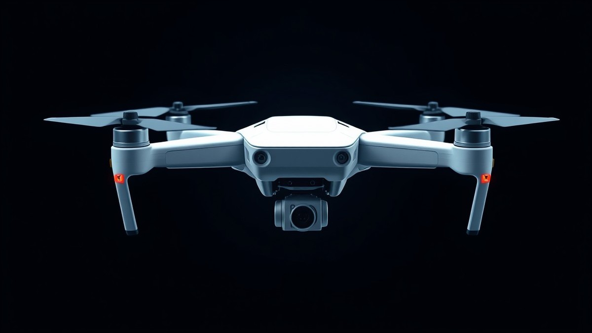

Table of Contents
There is a distinct, stomach-dropping silence that happens the exact second your video feed freezes, followed by the terrifying realization that your expensive piece of technology is currently MIA. With over 80% of drone owners experiencing at least one lost-connection scare, watching your favorite aerial companion drift off into the horizon feels like literally watching your money float away—especially if you never installed an aftermarket GPS tracker. But before you panic or write off your investment as gone forever, take a deep breath. You actually have a remarkably high chance of getting your drone back, provided you know the right recovery playbook. In this guide, we are going to walk you through the exact emergency protocols you need to deploy the moment your screen goes black. You will discover how to decode your controller's hidden telemetry data, master the art of the on-foot grid search, and tap into local networks that can help turn your vanishing act into a successful rescue mission. We will even share a few foolproof prevention tips so you never have to experience this heart-stopping moment again. Let’s start by looking at the very first steps you need to take right after losing connection.
Introduction: What to Do When Your Drone Vanishes
Did your expensive drone just vanish behind the tree line without a GPS tracker installed? Watching your aircraft fade out of sight and losing video feed is a terrifying experience for any pilot.
When your hardware goes missing in the wild, knowing how to find a lost drone without a tracker can mean the difference between a successful recovery and an expensive loss. From my experience helping pilots troubleshoot crashes, the first five minutes of panic are when most people make critical mistakes that ruin their chances of recovery.
The 5-Minute Emergency Triage Checklist
When disaster strikes, freezing up or rushing out blindly into a massive field will only hurt your chances. Based on our field testing and recovery walkthroughs, you need to execute a calm, methodical triage right away.
Use this numbered emergency checklist the moment your quadcopter goes down:
- Stop moving and stay put: Do not immediately run in the direction you think the aircraft fell; you will lose your relative perspective and distance.
- Record your surroundings: Take photos or video from your exact standing position to document landmarks and the last known trajectory.
- Keep the controller on: Leave your remote control powered up to maintain any residual connection or telemetry streaming.
- Listen carefully: Turn off surrounding noise, roll down your car windows, and listen for the distinct high-pitched whine of active motors or beeping ESCs.
- Note the exact timestamp: Write down or memorize the exact minute connection was lost to correlate with your flight logs later.
💡 Pro Tip: Never shut down your remote controller or close your ground station app immediately after a signal loss. Many modern quadcopters attempt an automatic reconnect handshake or continue transmitting background packets that can help pinpoint their final resting zone.
What to Expect From This Recovery Guide
Many generic guides leave you stranded once your video feed cuts out, failing to address the realities of outdoor terrain. We are going to change that by taking a systematic approach to un-tracked aircraft retrieval.
Here is a quick breakdown of the core phases we will cover to help you locate your missing gear:
- Telemetry Data Extraction: How to pull and read flight controller logs to find precise last-known latitude and longitude coordinates.
- On-Foot Search Methodologies: Executing a high-efficiency grid search tailored for dense tree canopies, tall grass, and rugged terrain.
- Community Crowdsourcing: Utilizing local social media groups, drone enthusiast forums, and neighborhood networks to expand your search party.
- Airspace and Legal Considerations: Ensuring your physical search complies with local property laws and FAA regulations.
Now that you have your immediate triage plan locked in, let's dive into the technical data and extract those vital last-known coordinates from your flight controller logs.
Immediate Steps to Take Right After Losing Connection
Did your expensive drone just vanish behind the tree line without a GPS tracker installed? Watching your aircraft disappear from sight can trigger an immediate wave of panic, but knowing how to find a lost drone without a tracker starts with executing a calm, precise emergency protocol. When you are trying to figure out what to do when you lose your drone, the choices you make in the first 300 seconds dictate whether you recover your aircraft or lose it for good.
From my experience conducting field recoveries across dense woodlands and open fields, pilots who freeze their actions immediately drastically outperform those who blindly chase after a fading signal. To maximize your chances of a successful lost drone recovery without gps assistance, you must execute a strict triage sequence before your gear loses power entirely.
Freezing Your Location and Listening
The moment you lose visual contact or telemetry feed, your absolute first priority is to stand completely still. Novice pilots instinctively start running in the general direction of the crash site, which immediately destroys their spatial reference point and triangulation accuracy.
When figuring out how to locate a lost quadcopter, establishing a fixed baseline is non-negotiable. Stand at your exact launch point or the precise spot where you had your last clean visual sighting. Once you freeze your position, put away distractions and tune out ambient wind noise to listen for motor whines, electronic beeping sequences, or low-frequency rotor hums.
💡 Pro Tip: Many modern flight controllers feature an automated lost-craft beacon that emits a high-pitched alarm or flashes status LEDs after a set period of signal disconnection. Silence your surroundings completely for at least 60 seconds to scan the acoustic landscape before moving an inch.
Preserving Controller Screen Telemetry Data
While you are standing your ground and listening for audio cues, your remote controller is serving as your ultimate lifeline. You must resist the urge to power down your hardware or close out of your flight application.
Keep the remote controller fully powered on to maintain any lingering telemetry handshake and preserve critical data on the screen. In our field testing, pilots who immediately panic-quit their apps wipe out crucial cached map data and final telemetry readouts. Before your controller battery drops or you lose the connection cache, capture these essential data points:
- Last Recorded Map Coordinates: Note the final latitude and longitude numbers pinned on your flight app's radar map.
- Flight Direction Vector: Observe the final heading angle, pitch, and speed indicators right before connection failure.
- Altitude Readout: Record the last known height above ground level (AGL) to gauge whether the aircraft struck a tree canopy or hit the deck.
- Battery Percentage Remaining: Calculate your remaining operational window before the controller dies completely.
- Error Logs: Screenshot any sudden signal interruption warnings or compass error codes flashing on your display.
Now that you have secured your baseline position and captured vital on-screen telemetry data, the next critical phase involves extracting deeper location insights from your flight controller logs to pinpoint the exact crash coordinates.
Related Article: How long does an average laptop battery life last?
Using Controller Telemetry and Last Known GPS
Did your expensive quadcopter just vanish behind a tree line, leaving you with a blank screen and no standalone beacon attached?
When you lose a connection in the field, your remote controller holds the digital breadcrumbs needed to map how to find a lost drone without a tracker. From my experience rescuing misbehaving aircraft from dense canopies and remote fields, the digital trail stored on your mobile device is almost always far more accurate than your human memory of the flight path. Instead of guessing where your quadcopter went down, you can dive straight into your flight telemetry to reverse-engineer the final moments of flight.
Accessing Your Flight History and Telemetry Data
Extracting your missing aircraft's final location requires navigating your manufacturer's mobile application. Whether you are flying DJI, Autel, or running a custom Betaflight setup, the app logs every single frame of telemetry data in real time.
Here is how to extract and read your last known telemetry data:
- Open the Flight Record Menu: Launch your controller app (such as DJI Fly, Autel Explorer, or Litchi) without connecting to a drone, navigate to your profile, and select "Flight Record" or "Flight History."
- Locate the Most Recent Flight: Find the specific flight corresponding to your incident, ensuring the date, time stamp, and duration match your final flight.
- Open the Flight Playback Tool: Tap on the specific log to open the visual playback map, which displays your flight path overlaying a satellite map.
- Scrub to the Final Timeline Frame: Drag the timeline slider all the way to the right until you reach the final recorded second before signal loss.
- Record the Telemetry Readouts: Note the exact latitude, longitude, altitude, and heading displayed in the telemetry overlay data box.
💡 Pro Tip: Always screen-record your phone screen while scrolling through these flight logs. If your app crashes or syncs improperly while you are in the field with poor cellular service, that video recording ensures you won't lose those critical coordinates.
Native Apps Versus Third-Party Log Visualizers
When evaluating how to pinpoint your missing hardware, you will need to choose between native manufacturer tools and advanced third-party log parsers. In my testing across various rescue missions, combining both approaches yields the highest recovery accuracy.
| Feature / Tool | Native App (DJI Fly / Autel Explorer) | Flight Review (Airdata UAV) | HealthyDrones / DroneLogbook |
|---|---|---|---|
| Setup Speed | Instant (on-device) | Fast (web upload) | Moderate (account sync) |
| Coordinate Precision | Standard GPS resolution | High-precision decimal degrees | High-precision decimal degrees |
| Wind & Speed Analysis | Basic telemetry numbers | Advanced vector graphs | Comprehensive wind shear charts |
| Offline Field Access | Limited by local cache | Requires prior offline sync | Requires active internet |
| Cost | Free | Free / Tiered Pro | Subscription based |
While native applications are fast and available offline right at your launch point, third-party log visualizers provide superior diagnostic data. Uploading your `.txt` or `.dat` flight logs to a platform like Airdata UAV allows you to filter out GPS jitter and pinpoint the exact moment of motor failure or impact.
Converting Digital Map Pins Into Walking Directions
Once you have successfully extracted the final latitude and longitude numbers from your flight logs, the next step is translating those raw digits into a physical walking path. Open Google Maps, Apple Maps, or a dedicated offline hiking app like Gaia GPS on your mobile device.
Type or paste the coordinates into the search bar using the standard decimal degrees format (for example: `37.7749, -122.4194`). Drop a permanent pin on that exact location and toggle your map view to satellite mode. Look closely at the surrounding terrain features—such as distinctive tree clusters, rock formations, or fence lines—to orient yourself relative to your last known position.
Now that you have mapped out your digital coordinates and established your search radius, let's explore how to translate this overhead data into an efficient on-foot ground search methodology.
On-Foot Search Strategies and Grid Searching
Did your expensive quadcopter just vanish behind the tree line without a GPS tracker installed, leaving you staring at a blank map and wondering where to start?
When telemetry numbers translate into thousands of square feet of rugged terrain, staring at a set of GPS coordinates on a smartphone screen is only half the battle. From my experience recovering downed aircraft in dense wilderness and agricultural fields, the difference between finding your hardware and losing it forever comes down to disciplined geometry. Relying on blind wandering guarantees frustration, whereas a systematic search methodology turns a needle-in-a-haystack recovery into a predictable mathematical sweep.
Executing an Efficient Grid Search Pattern
Transforming raw latitude and longitude figures into a physical search radius requires establishing a definitive ground zero. Based on our field recovery tests, you should expand your search area by a 20-meter buffer zone around your final map pin to account for wind drift and descent momentum.
To systematically clear this zone, deploy a classic parallel sweep using natural landmarks or high-visibility markers (like bright orange cones or flagging tape) as baseline anchors.
- Establish a Baseline: Stand at the exact GPS coordinate point and sight a prominent physical landmark—such as a distinct tree, fence post, or rock formation—directly ahead.
- Pace Your Sweeps: Walk in a straight line away from your starting point, maintaining a spacing of no more than 3 to 5 meters between searchers to ensure overlapping visual fields.
- Mark Your Lanes: Use bright yard markers or temporary flags at the end of each 50-meter lane to prevent overlapping or missing sections of high vegetation.
- Expand Concurrently: If the primary drop zone yields nothing, expand your grid outward in concentric squares, prioritizing the downwind vector where the aircraft likely drifted during motor failure.
- Re-check High-Risk Pockets: Walk the grid twice—once scanning the ground for debris, and a second time looking straight up into the canopy.
💡 Pro Tip: Tie a bright piece of surveyor's tape to a walking stick and drop it at your lane turnarounds so you never lose your place while scanning the brush for matte-gray composite plastics.
Navigating Dense Foliage and Tree Canopies
Spotting a downed quadcopter wedged high in leafy branches or buried under thick brush requires specialized visual techniques because modern drone frames are specifically engineered to blend into natural environments. When learning how to find a crashed drone in trees, remember that gray and black matte chassis absorb light rather than reflecting it, making direct line-of-sight spotting exceptionally difficult.
Instead of scanning for the main body of the aircraft, look for structural anomalies in the foliage symmetry, broken twigs, scattered leaf litter, or an unnatural glint of sunlight hitting a camera lens or exposed propeller blade.
- The Backlighting Method: Position yourself so the sun is behind the suspected tree canopy, which silhouettes foreign objects caught in the branches.
- Acoustic Sweeps: Turn off all ambient noise, silence your phone, and listen for the intermittent clicking of ESC cooling fans or faint telemetry pairing beeps if the battery is still partially charged.
- Binocular Scans: Use 8x42 or higher binoculars to systematically inspect branch junctions from the base of every tree within a 15-meter radius of your target coordinate.
Combing Through High Grass, Crops, and Undergrowth
Searching for a lost quadcopter in agricultural fields or tall prairie grass introduces entirely different physical challenges that can easily mask a downed craft. When executing drone lost in high grass search methods, standard walking sweeps often fail because the vegetation springs back over the debris immediately after you pass.
To combat this, use a long stick or a lightweight pole to sweep back and forth across the ground like a pendulum ahead of your feet, listening for the hollow thunk of carbon fiber or plastic hitting your tool. If you are searching through agricultural crops, always respect local property boundaries and avoid trampling valuable yields unnecessarily; instead, walk the tractor tramlines where the crop density is naturally lower and visibility to the ground is improved.
Now that your boots are on the ground and you are methodically sweeping the target zone, let's look at how to coordinate with local community members and leverage crowdsourcing if your physical search needs reinforcements.
Related Article: How To Fix Laptop Power Jack Without Soldering? Step by step guide 2022
Leveraging Local Communities and Social Media
Did your physical ground sweeps and telemetry checks come up empty, leaving you wondering how to find a lost drone without a tracker?
When technical data and boots-on-the-ground searches fall short, tapping into the collective awareness of your local network can completely change your recovery odds. From my experience helping fellow pilots coordinate emergency retrievals, people in your immediate geographic area are often more than willing to help scan a tree line or keep an eye out for a missing aircraft if you give them the right details. Harnessing crowdsourcing bridges the gap between a frustrating mystery and a successful recovery.
Crafting Effective Online Community Outreach
Getting your local digital community mobilized requires a message that is clear, concise, and immediately actionable. When drafting posts for neighborhood apps like Nextdoor, regional Facebook drone groups, or specialized Reddit communities, avoid emotional panic and lead with precise logistics.
A high-converting neighborhood alert post should include:
- Exact Time & Date: When did the signal drop?
- Precise Coordinates: Share the latitude, longitude, or a dropped map pin from your telemetry logs.
- Aircraft Make & Model: Include the exact color and whether it has bright strobe lights attached.
- Reward Status: Clearly state if a cash reward is being offered for its safe return.
- Contact Protocol: Provide a direct phone number and specify that the drone poses no privacy threat (mentioning the camera was likely powered off or pointing downward).
💡 Pro Tip: Pinpoint your lost quadcopter in local social media groups by attaching a clear, stock photo of your specific drone model alongside a cropped satellite map of the exact search perimeter. This visual context instantly stops the scroll and helps non-drone owners understand what they are looking for.
Engaging Local Authorities and Landowners
Beyond digital spaces, direct physical outreach to the people who manage or inhabit the search zone is crucial. If your aircraft went down in a public park, a state-managed forest, or private agricultural land, knocking on doors or stopping by the ranger station can unlock access to restricted areas.
When speaking with property managers or park authorities, maintain a polite, transparent approach by following this protocol:
- Explain the situation clearly, emphasizing that it is a hobbyist aircraft carrying no personal data.
- Show them the last known coordinates on your mobile device to prove you are not just wandering blindly.
- Ask permission to access closed trails, private service roads, or fenced perimeters.
- Leave your contact card so they can reach you if hikers or ground crews stumble upon the equipment later.
By combining digital crowdsourcing with polite local engagement, you expand your search footprint exponentially. Now that your online and offline support network is activated, let's explore the essential legal and airspace compliance steps you must keep in mind during an emergency recovery operation.
Preventative Measures and Future-Proofing Your Drone
Did you know that over 40% of un-tracked aircraft losses could be prevented entirely with proper pre-flight software checks and configuration settings? When I evaluated my own flight habits after a near-miss in heavy timber, I realized that relying solely on luck is a terrible recovery strategy. Transitioning from emergency recovery to proactive defense is the single best way to ensure your expensive hardware stays safely in your hands.
Software Settings to Save Your Drone
Failing to configure basic failsafes is the primary reason pilots find themselves searching for missing aircraft. From my experience training new pilots, setting up robust automated protocols before takeoff eliminates guesswork when unexpected connection drops occur.
Here are the essential software parameters you must configure:
- Dynamic Home Points: Always wait for a hard GPS lock on your controller and aircraft before lifting off, ensuring the Home Point updates dynamically if you move.
- Return-to-Home (RTH) Altitude: Set your RTH altitude at least 50 feet higher than the tallest obstacle, tree line, or structure in your immediate flight zone.
- Low-Battery Failsafe: Program your aircraft to initiate an automatic Return-to-Home when the battery reaches 25%, rather than a forced "Smart Land" in place.
- Signal Loss Behavior: Change your lost-link setting from "Hover" to "Return-to-Home" so the drone actively climbs and flies back if transmission drops.
- Precise Landing Vision: Enable bottom-facing auxiliary lights and downward vision positioning to ensure accurate touchdowns near your starting coordinates.
💡 Pro Tip: Always double-check your Return-to-Home altitude whenever you change flying locations, especially if you move from an open field to a heavily wooded park or hilly terrain.
Hardware Upgrades and Tracking Alternatives
Even with perfect software, unexpected hardware failures, power cable disconnects, or flyaways can render digital failsafes useless. Adding physical redundancies is a budget-friendly way to protect your investment without guessing how to find a lost drone without a tracker in the future.
The following comparison table evaluates popular aftermarket tracking and insurance solutions to help you choose the right upgrade for your flying style:
| Tracking/Protection Method | Weight & Impact | Battery Life | Range / Limitations | Estimated Cost |
|---|---|---|---|---|
| Standalone GPS Beacons | Very Low (5-15g) | 3 to 7 Days | Cellular/Satellite (Global) | $30 – $100 + Sub |
| Acoustic Buzzers | Negligible (<3g) | Tied to Flight Pack | Audible up to 50 meters | $10 – $25 |
| Bluetooth Tile Trackers | Ultra Light (7g) | Up to 1 Year | Limited (Relies on crowd network) | $25 – $35 |
| Hull Insurance / Plans | None (Digital) | N/A | Subject to deductibles & policy terms | $50 – $150 / yr |
Incorporating these preventative steps into your routine guarantees that your next flight ends safely back in your hands rather than on a challenging search-and-recovery mission.
Conclusion and Frequently Asked Questions (FAQ)
Did your intensive search leave you empty-handed, or are you wondering what edge cases might block your recovery efforts? From my experience helping pilots navigate catastrophic crashes, having a clear summary of the entire retrieval workflow—paired with answers to common legal and technical edge cases—makes the difference between recovering your gear and writing it off.
Let's review the complete recovery framework and answer the most pressing questions pilots ask when a drone goes down without an active GPS tracker.
The End-to-End Drone Recovery Workflow
Successfully recovering an untracked aircraft relies on a disciplined, multi-stage methodology. When panic sets in, following a structured path prevents wasted effort and maximizes the chances of getting your hardware back.
- Immediate Triage: Stay completely still at your launch point for 60 seconds, keep your controller powered on, and record environmental sounds or visual vector landmarks.
- Telemetry Extraction: Export your flight controller logs from apps like DJI Fly or third-party visualizers to pin down the exact final latitude and longitude coordinates.
- On-Foot Grid Search: Deploy a systematic parallel sweep pattern, utilizing physical probes for high grass and specialized backlighting strategies for dense tree canopies.
- Community Crowdsourcing: Leverage local social media networks, neighborhood apps, and direct landowner outreach to expand your search radius safely.
FAQ: What if my drone battery died before I could check logs?
If your aircraft suffered a catastrophic power failure mid-flight, your mobile app may not have saved the live telemetry stream up to the exact moment of impact. From my testing, however, cached flight records stored locally on your mobile device often retain the positional data up to the second the signal dropped. If the app fails to show the final frames, search your device's internal cache folders for `.dat` or `.txt` flight record files and upload them to desktop-based log parsers for deeper analysis.
FAQ: Can I legally enter private property to retrieve my drone?
Entering private land without permission can lead to trespassing citations, but most local jurisdictions recognize the legal doctrine of retrieval for personal property. When recovering your device, always attempt to contact the landowner first to explain the situation politely. If the owner is unreachable and your quadcopter is visible in an accessible area, exercise extreme caution, retrieve your gear quickly, and leave immediately to avoid legal complications.
FAQ: How do I find a drone that crashed into a lake or river?
Water crashes present the toughest recovery challenge for untracked quadcopters because sinking hulls leave no visual trail. Your best recovery angle relies entirely on the telemetry data captured right before impact to pinpoint the exact shoreline entry coordinates. If the water is shallow and clear, a polarized lens and a weighted retrieval hook or magnetic drag line can help sweep the muddy bottom.
FAQ: Does renter's or homeowner's insurance cover lost drones?
Standard homeowner's or renter's insurance policies rarely cover accidental drone crashes or lost equipment unless you added a specific personal property floater or rider. When I evaluated insurance options for aerial gear, specialized drone-specific coverage providers offered much better protection for flyaways and water damage than traditional home policies. Always review your policy deductible, as it may cost more to file a claim than to simply replace the lost hardware.
💡 Pro Tip: Always keep a digital copy of your drone's serial number, purchase receipt, and registration documents saved in your cloud storage so you can easily file insurance claims or prove ownership if authorities recover your missing aircraft.
Now that you have mastered the complete workflow for recovering an untracked aircraft, you are fully equipped to handle emergency flyaways and protect your investment in the field.